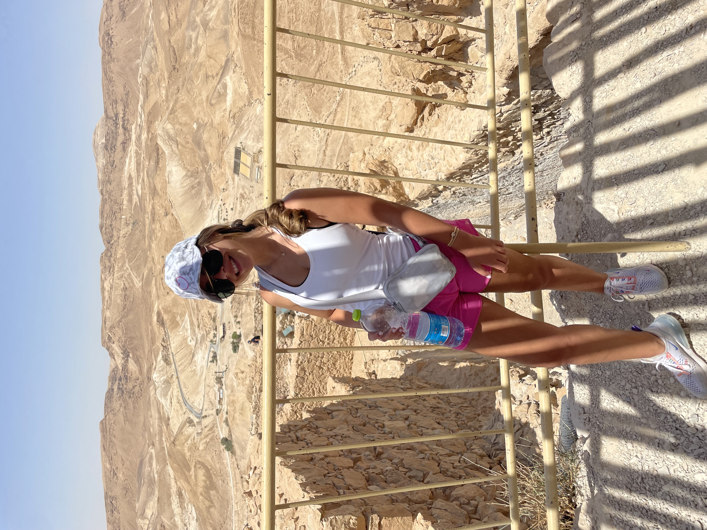
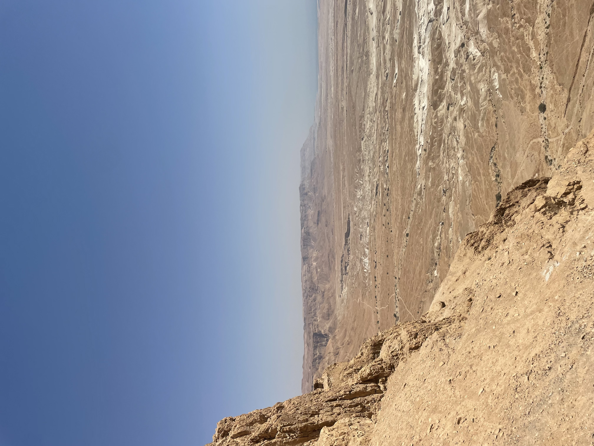
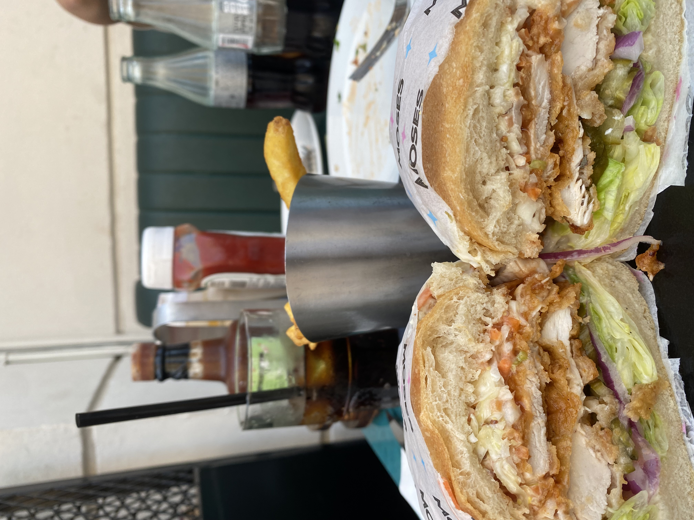

Israel is a small county in the middle east, about the size of New Jersey, located on the eastern shores of the Mediterranean Sea. The country has a strong economy, landmarks of significance to several religions, and is home to over 9 million people. In the summer of 2022, I was lucky enough to call this amazing country my home. My name is Eliza Kollin, and I am a Jewish 20-year-old born and raised in Livingston, New Jersey. If four years ago you told me I was going to be living in Israel for three months, I would have thought you were crazy.
I have always been a home body, never wanting to leave home. Going to college was a big adjustment for me, but I knew it was time to make some changes in my life. My sophomore year of college I decided to apply for a program called Onward Israel, which allows me to live in Israeli for three months, while also having the chance to work for an Israeli company as an intern. I didn’t know a single person going to Israel, but I knew this was something I needed to do for myself. From May 23rd to August 7th, I was no longer the little girl that couldn’t leave her parents, I was an independent young adult, ready to take on anything.
Living is Israel was very different than living in America. The people were nicer, the food was better, and life in general was just easier. I felt like the absolute best version of myself and woke up with a smile on my face every morning. Every day was different, but I always had a routine that kept me in check and allowed me to feel in control. Every morning I would wake up and walk to aroma to get coffee. I would get an iced aroma, which was basically ice coffee with sweetener. After I would walk to get coffee, I would come back and get ready for work. I would pack my lunch, pack my backpack, and walk 15 minutes to the Nitsba Building, which is where I worked. I loved going to work every day. My coworkers were incredible, and I learned so much from my internship. Every day after work I would go home and meet up with all my friends. We either would go to the beach and bring food or plan to go out for dinner together.
 The great part about living in Israel was that there was always something to do. Whether I was going to the beach, eating at a five-star restaurant, or going site seeing, I was truly never bored. I lived in Tel Aviv for most of the summer but spent a lot of time traveling to all different landmarks in Israel. I spent a lot of time in Jerusalem, Haifa, Jaffa, Eilat, and more. No matter what I was doing, I was also learning something new, which made me fall in love with Israel more and more every day.